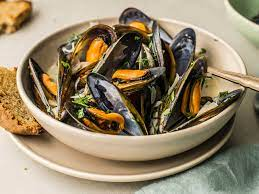

Mussels

Description
Although it’s inspired by the classic cocktail, this recipe is alcohol-free, so can be enjoyed by all the family
Ingredients
- 1kg (2lb) mussels, cleaned and de-bearded
- 75ml (3fl oz) sunflower oil
- 2 celery stalks
- 1 tsp celery salt
- few drops Tabasco sauce
- 1 tbsp Worcestershire sauce
- 500ml (18fl oz) tomato juice
- 1tbsp flat leaf parsley
Steps
- Before cooking, discard mussels with cracked or broken shells, as well as those with open shells that do not close when you tap them. Heat the oil in a pan with a tight-fitting lid and add the celery and celery salt; cook over a gentle heat for 4 to 5 minutes until softened but not brown. Add the Tabasco and Worcestershire sauce. Stir well, then tip in the prepared mussels and tomato juice; bring to the boil.
- Cover the pan and cook for 5 minutes until the mussel shells have opened. Discard any mussels that haven't opened fully during the cooking process.
- Divide between warmed bowls and scatter with chopped parsley. Serve hot with crusty bread for mopping up the delicious juice.